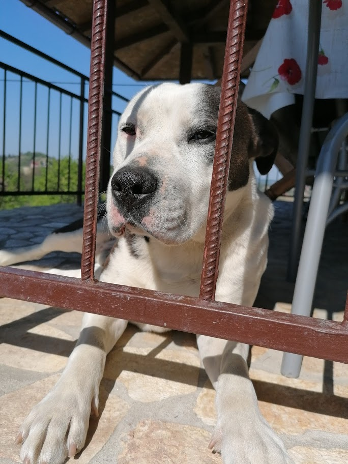
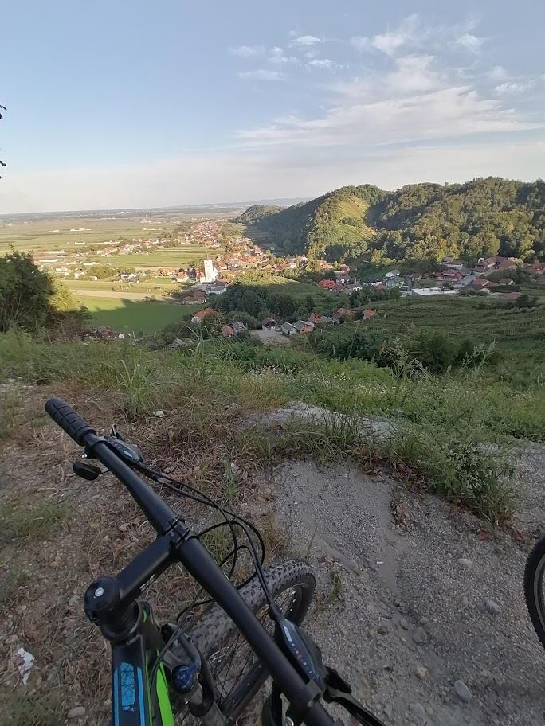

Imaš li nekada dane kada ti se jednostavno ništa neda? Nemaš volje ni za čim. Samo sjediš i gledaš serije. S vremena na vrijeme dobro dođe malo odmora i nema ništa loše u tim danima, no ja ne pričam o tome. Što kada ovakvo ponašanje postane kronično? Iz dana u dan gubiš svoj smisao? Svaki dan je isti?
Uvedi malo raznolikosti. Promijeni nešto. Ja imam psa koji me svaki dan tjera u šetnju. To može biti izvrsna avantura. Ideš putevima gdje nisi bio, uvijek sretneš nekoga, s nekim pričaš, nešto se već događa.
Što kada sam prelijen za vježbanje? Jednostavno se ne mogu natjerati. Ma nema šanse. Jedno snažno oružje je fizika. Gravitacija u mom slučaju. Potreban je samo mali korak prema biciklu da sjedneš na njega i kreneš. To pogotovi vrijedi ako živiš na brdovitom području. Bicikl ide sam od sebe. A kada dođe brdo nemaš izbora nego se popeti na njega ako ikad želiš više doći kući. Ta motivacija za mene funkcionira.
U tom naletu adrenalina tijelo se počinje buditi, kada živim tek tada vidim koliko toga propuštam dok sam zatvoren tamo u svojoj sobi. Vidim da propuštam život. Ima li nešto bolje od vjetra u kosi i predivnog pogleda s brda na koji može biti ponosan tko se popeo?
Jednom kada se pokreneš, samo ideš, više se nije ni tako lako zaustaviti. Samo je potreban taj početni momentum.
To je fizički momentum. To je neopisivo zdravo i korisno za zdravlje.
A s druge strane imaš i psihički momentum. Kada kreneš nešto raditi. Nešto intelektualno. To može biti isto avantura. Probaš nove stvari. Probaš napisati nešto, recenzirati neki film, probaš nacrtati nešto, uzeti neki instrument u ruke i probati odsvirati nešto. U naše doba stvarno nije problem ući u avanturu preko laptopa ili mobitela. Nema izgovora.
Život može biti mnogo više od škole/posla i gledanja filmova i serija.
Već mi je loše od konzumiranja svakakvih sadržaja (gledanje serija, igranje igrica). Potrebno je stvarati. Tu se stvara naša nova avantura.
"Just do it." - Nike
Koja će tvoja avantura biti danas? Nešto novo? Što te veseli? Što bi mogao, a još nisi napravio?